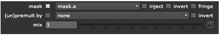

几乎所有的颜色校正效果 核武器 包括 面具 用于将校正限制在哑光图像的非黑色像素值的参数。例如，假设您想在不影响建筑物的情况下将蓝色投射添加到以下场景。
| 原始图像。 | 彩色校正图像。 |
| 遮罩图像。 | 彩色校正图像。 |
你可以创建一个覆盖河流的垃圾掩模，然后在掩模下面的框架区域增加红色通道的伽马值。
通常，遮罩控件位于 “属性” 面板的底部。然而，在像 HSVTool 这样的多用途效果的情况下，可能有多个遮罩控件，因此您可以使用不同的遮罩来限制每种类型的校正。
|
 |
| 选择遮罩通道。 |
| 1。 | 打开节点的属性面板并找到 面具 控制。 |
| 2. | 从下拉菜单中选择要用作遮罩的频道。 |
| 3. | 如果你检查 注入 在 面具 控件，从 面具 输入被复制到预定义的 面具。 频道。这样，您可以在下游再次使用最后一个屏蔽输入。您还可以设置要使用的节点流 面具。 作为遮罩，然后通过简单地将新遮罩连接到第一个节点的遮罩输入连接器来更改所有遮罩。 |
| 4. | 如有必要，请检查 反转 用于反转蒙版的框。 |
| 5. | 要模糊遮罩的边缘，请选中 边缘 . |
| 6. | 如果节点的整体效果太差了，你可以混合后的一些输入图像的拖拖拉拉的 混合 滑块。 |
| 7. | 如果您只想输出遮罩下的框架部分，请选中 (Un) premult by 盒子。 |
|
|